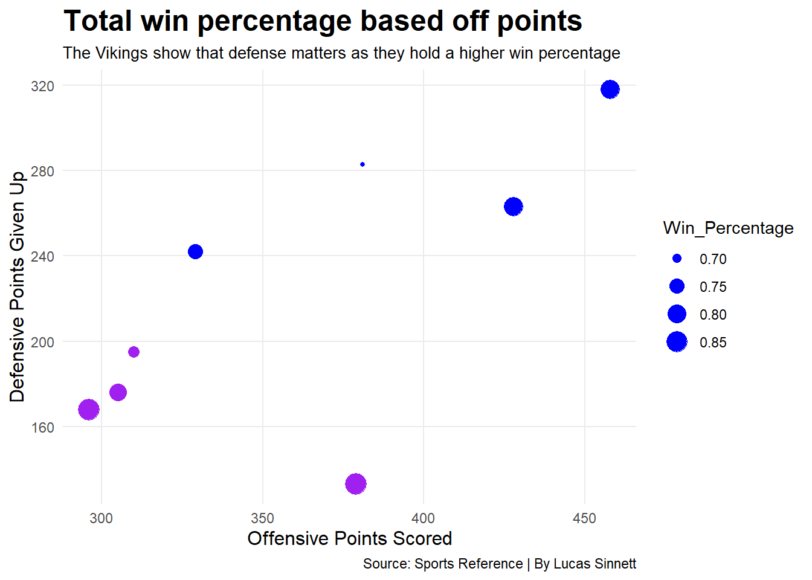
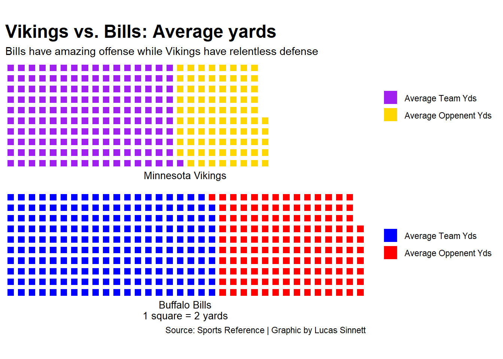
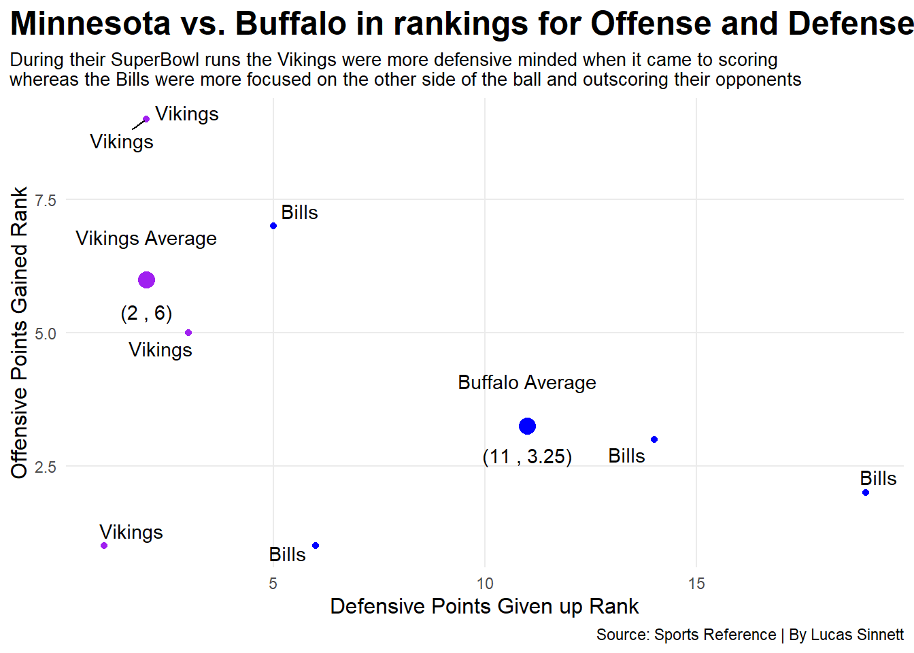

Who is the greater SuperBowl letdown Vikings or Bills
vikings
bills
code
Author
Lucas Sinnett
Published
November 6, 2022
The Minnesota Vikings and the Buffalo Bills are two franchises that have had the roughest road in the NFL. The Vikings were the first team to make to four Super Bowls during the era and were also the first team to lose four Super Bowls. The Bills also made it to four Super Bowls, but had the historic four loses in a row.
Both of these teams were very strong candidates to win the Super Bowl and were many times favored in the game. Many consider the Vikings first berth to the final game one of the greatest upsets in Super Bowl history. The Bills lost their first Bowl by a single missed missed field goal at the end of regulation.
The franchises of Buffalo and Minnesota have yet to reach the big game since their losses all those years ago. This makes me ask the question: Which team was the bigger super Bowl letdown?
Lets look at the season stats for each year that team made it to the Super Bowl.
Using the data collected from Sports Reference we are going to look at the points scored by each offense each year compared to the amount of points they gave up and see what their win percentage was for each Super Bowl season.
When the Vikings went to their Super Bowls in the 60s and 70s, the teams only played 14 games and in the 90s when the Bills played they competed in 16, so I used win percentage rather than total wins to show a more equal comparison.
Code
library(tidyverse)library(readr)library(ggrepel)library(waffle)v1 <-read_csv("1969.csv") %>%mutate(PF1969=PF) %>%select(Player, PF1969)v2 <-read_csv("1973.csv") %>%mutate(PF1973=PF) %>%select(Player, PF1973)v3 <-read_csv("1974.csv") %>%mutate(PF1974=PF) %>%select(Player, PF1974)v4 <-read_csv("1976.csv") %>%mutate(PF1976=PF) %>%select(Player, PF1976)b1 <-read_csv("1990.csv") %>%mutate(PF1990=PF) %>%select(Player, PF1990)b2 <-read_csv("1991.csv") %>%mutate(PF1991=PF) %>%select(Player, PF1991)b3 <-read_csv("1992.csv") %>%mutate(PF1992=PF) %>%select(Player, PF1992)b4 <-read_csv("1993.csv") %>%mutate(PF1993=PF) %>%select(Player, PF1993)combined3 <-read.csv("combined3.csv")combined4 <-read_csv("combined4.csv")combined3$Team <-c("Vikings","Vikings","Vikings","Vikings","Bills","Bills","Bills","Bills")combined3$Wins <-c(12,12,10,11,13,13,11,12)combined3$Win_Percentage <-c(.857,.857,.714,.786,.813,.813,.688,.75)vk <- combined3 %>%filter( Team =="Vikings" )bf <- combined3 %>%filter( Team =="Bills" )vk2 <- vk %>%mutate(Total_PFOffense =mean(PFOffense), Total_PFDefense =mean(PFDefense) )bf2 <- bf %>%mutate(Total_PFOffense =mean(PFOffense),Total_PFDefense =mean(PFDefense) )ggplot() +geom_point(data=vk, aes(x= TeamStats, y= Opp.Stats, size=Win_Percentage), color="purple") +geom_point(data=bf, aes(x= TeamStats, y= Opp.Stats, size=Win_Percentage), color="blue") +labs(title ="Total win percentage based off points",subtitle="The Vikings show that defense matters as they hold a higher win percentage",x="Offensive Points Scored",y="Defensive Points Given Up", caption="Source: Sports Reference | By Lucas Sinnett") +theme_minimal() +theme(plot.title =element_text(size =18, face ="bold"),axis.title =element_text(size =12), plot.subtitle =element_text(size=10), panel.grid.minor =element_blank() )

In the 8 seasons that both teams made it to the Super Bowl, the Vikings have a higher win percentage in 2 seasons than all of the Bill’s season and also have an overall higher average win percentage in all the seasons combined.
It is obvious to tell that the Bills were based in offensive power where the Vikings had all time great defensive power on the other side of the ball based on the points scored and given up.
The Bills can’t be excluded here however, they mirror Minnesota’s seasons with two good years, a mediocre year, and miracle year when making it to the super bowl.
Instead of looking at the amount of points scored, lets look at the amount of yards gained and the amount of yards given up.
Code
mv <-c("Average Team Yds"=161.25, "Average Oppenent Yds"=84,92.25)bb <-c("Average Team Yds"=199.5, "Average Oppenent Yds"=138)iron(waffle( mv, rows =10, colors =c("purple", "gold", "white")) +labs(x="Minnesota Vikings",title="Vikings vs. Bills: Average yards",subtitle ="Bills have amazing offense while Vikings have relentless defense") +theme(plot.title =element_text(size =18, face ="bold"),axis.title =element_text(size =12),axis.title.y =element_blank() ),waffle( bb, rows =10, colors =c("blue", "red")) +labs(x ="Buffalo Bills\n1 square = 2 yards",caption="Source: Sports Reference | Graphic by Lucas Sinnett"))

So again we see that the Vikings have an outstanding defense that allows very few yards with a good offense. The Bills had a superb offense for the time but gave up just under double the amount of yards that the Vikings did.
This does show that the Bill’s defense was quite a bit worse than the Viking’s offense, but how much worse? To see that, we will have to look at the rankings of the entire NFL.
Code
ggplot() +geom_point(data=vk, aes(x= PFDefense, y= PFOffense), color="purple") +geom_point(data=bf, aes(x= PFDefense, y= PFOffense), color="blue") +geom_point(data=vk2, aes(x=Total_PFDefense, y= Total_PFOffense), color="purple", size=4) +geom_point(data=bf2, aes(x=Total_PFDefense, y= Total_PFOffense), color="blue", size=4) +geom_text_repel(data=combined3, aes(x= PFDefense, y= PFOffense, label=Team))+annotate("text", x=2, y=6.8, label="Vikings Average") +annotate("text", x=11, y=4.1, label="Buffalo Average") +annotate("text", x=2, y=5.4, label="(2 , 6)") +annotate("text", x=11, y=2.7, label="(11 , 3.25)") +labs(title ="Minnesota vs. Buffalo in rankings for Offense and Defense", subtitle="During their SuperBowl runs the Vikings were more defensive minded when it came to scoringwhereas the Bills were more focused on the other side of the ball and outscoring their opponents", x="Defensive Points Given up Rank", y="Offensive Points Gained Rank", caption="Source: Sports Reference | By Lucas Sinnett") +theme_minimal() +theme(plot.title =element_text(size =18, face ="bold"),axis.title =element_text(size =12), plot.subtitle =element_text(size=10), panel.grid.minor =element_blank(),plot.title.position ="plot" )

The Vikings clearly had a better average offense than the Bill’s average defense when concerning amount of points scored. It is also important to note that Minnesota’s average defense was better than Buffalo’s average offense.
Hopefully, one of these two teams make it to the Super Bowl in the near future and don’t choke the win away.